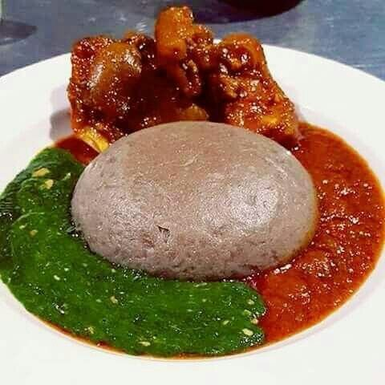

Amala recipe

Description
Amala is apopular food in south western nigeria among the yoruba tribe. It is made from yam flour.
It is usually served with various local soup like Efo and Ewedu. it is also traditionally eaten without ant cuttelery, just your fingers
Ingredients
Steps
- Boil water
- while water is boiling, seive the yam flour to remove lumps
- Pour flour in to boiling water and turn with a turning stick consistently for 5 minutes or until there's a smooth consistency
- Add a litthle water and return food to fire until it boils again
- Bring food down and turn again until smooth
- Food is ready serve with preffered soup